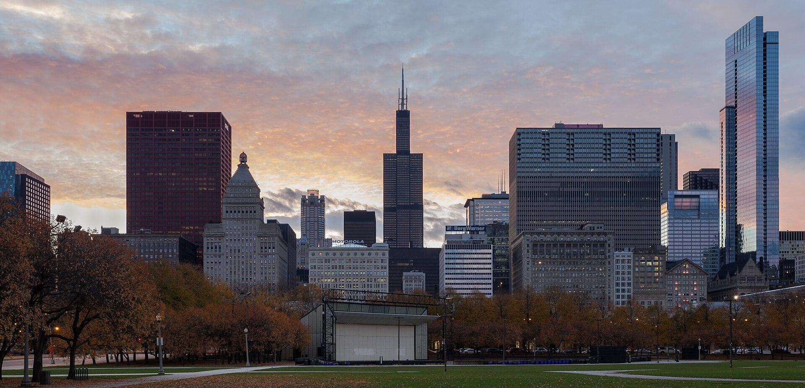
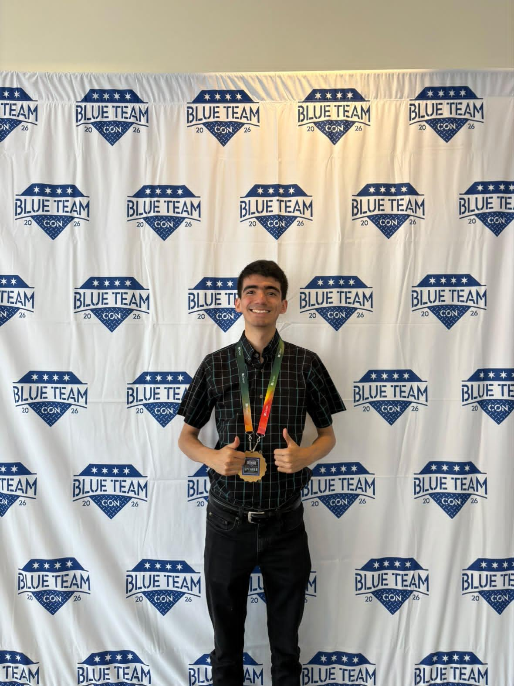
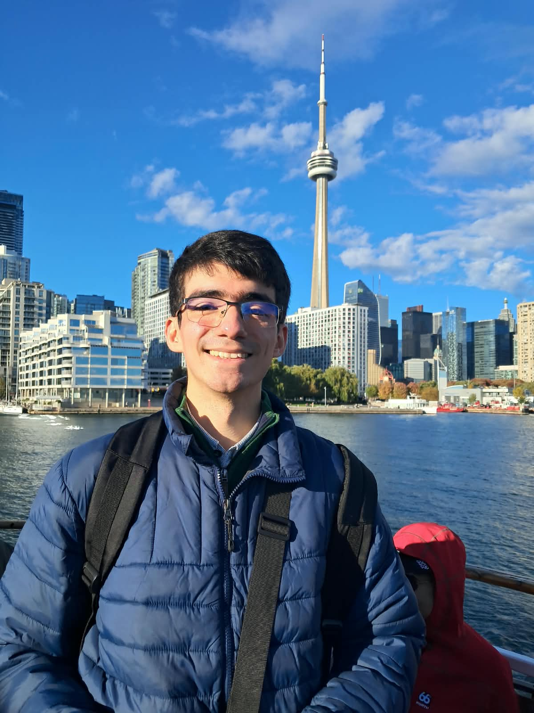
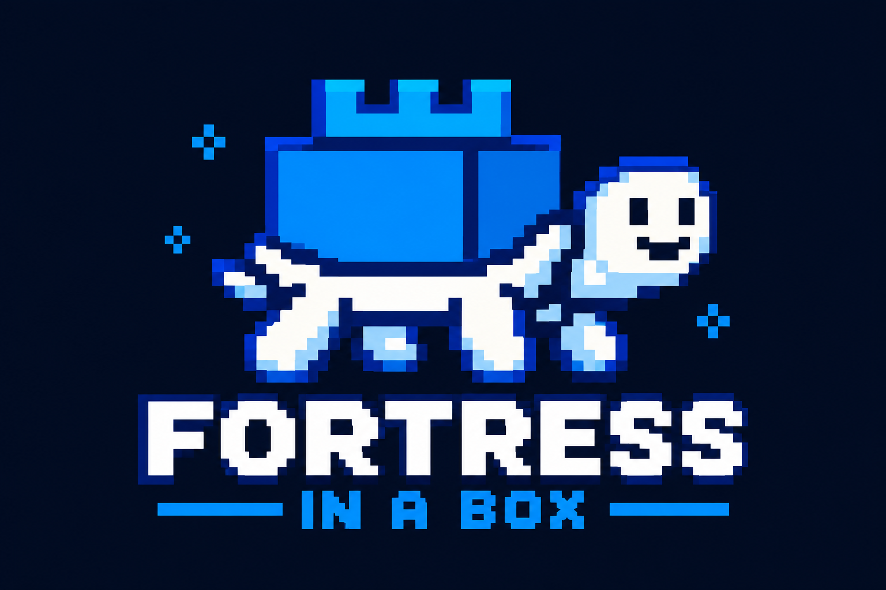
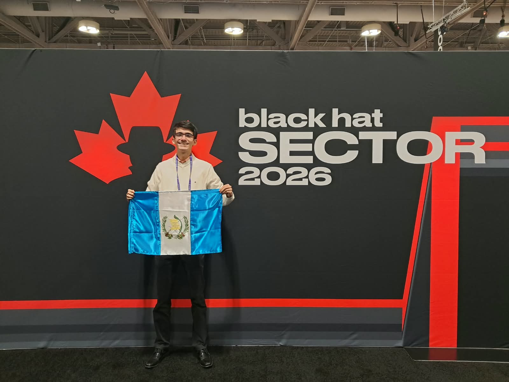

Blue Team Con
“Fortress in a Box: Enterprise-Grade Kubernetes Security for the Organizations That Can’t Afford It.”
Support Engineer in Guatemala City, focused on DevSecOps and cloud security. I build security that journalists and activists can afford.
Support Engineer at ITM. Systems Engineering coursework completed at USAC, graduating in 2027. Creator of Fortress in a Box and a 2026 speaker at Blue Team Con and Black Hat SecTor.

The Kubernetes security stack large companies run, made free, open source and installable with one command, for organizations whose security budget is zero.

git clone --branch v2.0.0 https://github.com/JoseLorenzana272/fortress-in-a-box
cd fortress-in-a-box && ./install.shPresenting Fortress in a Box to security teams in North America.


“Fortress in a Box: Enterprise-Grade Kubernetes Security for the Organizations That Can’t Afford It.”

Speaker. Bringing Fortress in a Box, and the flag of Guatemala, to Canada’s largest security conference.
The organizations most likely to be attacked, newsrooms, activists, human rights groups, are the ones that can least afford protection. That gap is what I work on.
I like infrastructure that heals itself, policies that say no early, and documentation a tired person can follow at night. Away from the terminal I play piano.
Conference talks, security work, or a cluster that worries you.
jodanielorenzana@